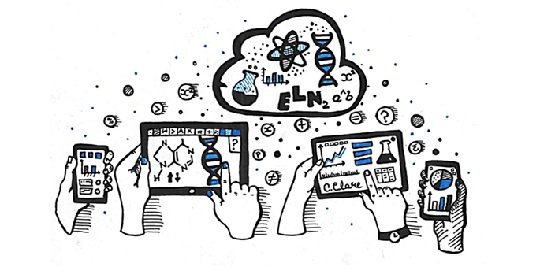

Overview of Available Data Storage Solutions during the project’s duration at TU Delft. These storage solutions are primarily for internal use, but can be shared with collaborators.
Please see TopDesk for an overview of all the storage solutions available to you. Below follow some more details for each storage solution.
TU Delft network drives
| Personal Drive (H:) | Staff Group Drive (M:) | Project Drive (U:) | |
|---|---|---|---|
| Purpose | Private work files only (sharing not possible) | Data shared within research group or department | Data from individual projects, shared with project members |
| Suitable for confidential data? | Yes | No | Yes |
| Size | 8 GB | > 5TB | > 5TB |
Project Drive
The Project Drive is the recommended storage solution for research data.
Project leaders or supervisors should request the drive to ensure that they also have access to the data (especially important for the long term storage of any data).
Anyone with a NetID can be added to a Project Drive (for external collaborators this NetID will have to be generated so additional information will need to be provided). To provide access to additional people you can add them when you request the drive via Topdesk, you can contact the Service Desk of your faculty (servicepuntTNW [at] tudelft.nl), or you can add them using UMRA (see TU Delft ICT for more UMRA manuals).
- Note that anyone with access to the Project Drive will have viewing or editing rights for the entire Project Drive, unless you’re using UMRA. If you want to easily manage access permissions it may be needed to request multiple Project Drives or work with alternative storage solutions such as SURF/OneDrive.
The Project Drive requires an internet connection. It may be more convenient to use the Project Drive as a backup environment and use another storage solution as your active working environment (SURFdrive/Onedrive).
To request additional storage space for an existing project, you can contact the service desk or re-submit the TopDesk form with ‘Change’ selected rather than ‘New’. For >5 TB of space, you may be contacted by the faculty IT manager for approval.
Network Drives and Delft HPC
Please see the DelftBlue documentation on the storage of data-transfer recommendations from the HPC clusters.
SURFdrive
- Secure cloud storage
- 30 days backup, synchronize and share data
- Desktop app for synchronization
- 500 GB
- Share data with external collaborators
- public link + with password protection + expiry date
- Check the manual
- Not suitable for long term storage as this is a personal storage space (account expires when you leave TU Delft)
- Students don’t have accounts but you can give access to folders/files (OneDrive may be more suitable when working with students)
- Do not use for highly confidential data such as state secrets, sensitive personal data, or highly sensitive IP material.
OneDrive
See the OneDrive manual on how to get started.
- Secure cloud storage
- 30 days backup, synchronize and share data
- 1 TB
- Share data with external collaborators by specifying users one by one with their email address
- Not suitable for long term storage account as this is a personal storage space (expires when you leave TU Delft)
- Students also have accounts
- Do not use for highly confidential data such as state secrets, sensitive personal data, or highly sensitive IP material.
Sending files
SURFfilesender can be used to share files up to 1 TB (also with end-to-end encryption up to 2)
TU Delft GitLab
TU Delft GitLab is a version control system for code with backup facility. Access to external collaborators, as well as public code sharing, can be provided but if you expect multiple external collaborators GitHub may be more suitable. TU Delft GitLab is primarily meant for confidential code/data that cannot be publicly shared.
For an overview of the options of differences between GitLab/GitHub/Gitea, see this repository chooser guide.
GitLab repository can be requested through TopDesk (Topdesk > Software and Authorisations > IT for Researchers > GitLab TU Delft > Request GitLab).
Subversion at TU Delft
TU Delft provides version control systems for data with backup facility. Access can be controlled by the repository owner.
Subversion repository can be requested through TopDesk (Topdesk > Software and Authorisations > IT for Researchers > Version Control Tools > Report to Service Desk)
An alternative (non-TU Delft) solution is Datalad.
Electronic Lab Notebooks
Electronic Lab Notebooks allow you to capture and organise data digitally, which makes it easier to back up information and search through your files.
Link your data and protocols
Collaborate easily by sharing your documents and data directly in the notebook
Export data in several formats
Integration with other software/tools
